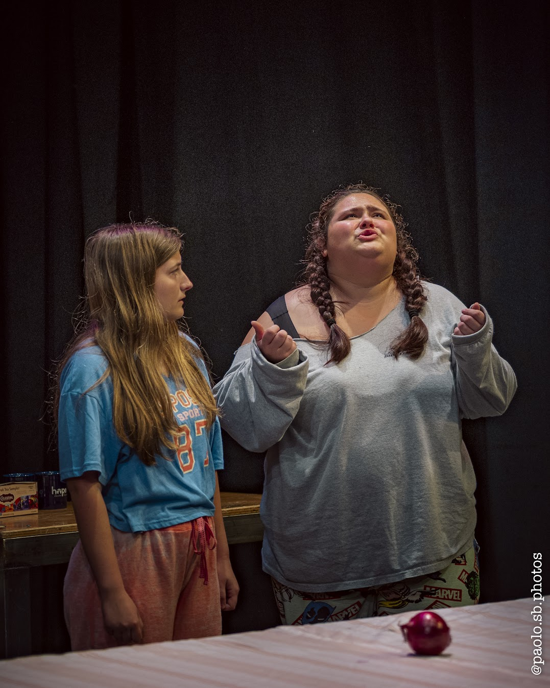

Three Women and an Onion
Directed by Andrew Zhang
Cast
- Sarah Kondas
- Payton Kirsten
- Leah Therrien
The onion keeps coming back.
I presented Three Women and an Onion as my second and final one-act play in the directing program. I chose this play for its deeply absurd style that gives the actors lots of freedom. The sink comes off as a statement. The set is not real, but the emotion it creates is.
